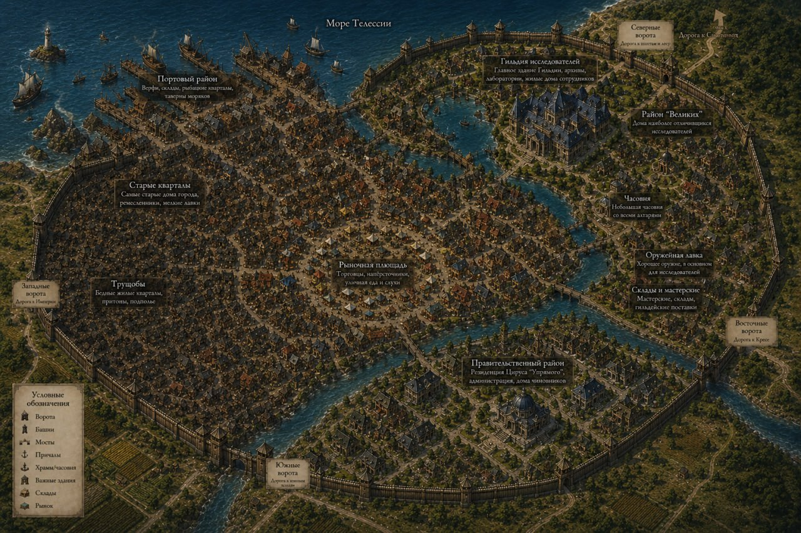

Мир и сеттинг — от мастера
Вводные мастера, как их получили игроки перед первой сессией (часть сообщений мастер переслал из другого чата). Текст мастера; правки только в оформлении.
Завязка
Существует город-государство, неподалеку от которого находится подземелье, конца и края которому пока никто не видел, в этот город стекаются люди всех мастей, но чаще туда попадают за преступления или скрываясь от закона, в редких случаях ради шанса разбогатеть на сокровищах подземелья или стать знаменитым. Вы-те кто по тем или иным причинам были вынуждены так же прибыть в это место
Тристиам и Фенрис
Мир-Телессия. Континент Энейлез. Вы находитесь в городе «Тристиам», город-государство является нейтральной территорией, находящейся между враждующими друг с другом, «Серебрянной империей», управляемой людьми и королевством «Креса», в которой преобладающим большинством жителей являются зверолюди. Город примечателен наличием нескольких рудных шахт, и одного древнего подземелья из которого время от времени выходят блуждающие монстры, и, кроме того, в строго определенное время появляется орда монстров, которые разоряют не только близлежащий город, но и территории двух стран. Из-за данной «особенности» местности власти двух стран пришли к соглашению, по которому обе страны отказываются от притязаний на данную территорию, включая все шахты город и сокровища подземелья, позволяя местным, независимым властям самостоятельно распоряжаться ресурсами. С другой стороны власти города обязуются «любой ценой» держать под контролем подземелье. Для того чтобы помочь им в этих целях(и избавиться от нежелательных элементов) страны присылают в Тристиам своих заключенных. Кроме того, сюда часто приходят разные отщепенцы и отбросы общества, разорившиеся крестьяне и ремесленники, утопающие в долгах и желающие быстро решить свои финансовые трудности за счет ресурсов подземелья, младшие дворянские дети, ищущие славы в приключениях и другие, не менее интересные личности посещают этот городок. Все это вам рассказал человек-старик по имени Фенрис, подсевший за ваш столик в таверне «Обидчивый дракон». Все вы незнакомцы из разных мест, и собрались за этим столом, так как у вас не было другого выбора, все остальные столики заняты другими людьми. Фенрис, сразу распознал в вас новичков, только прибывших в этот город и пока не знающих никого и ничего вокруг. Он оказался крайне разговорчивым, и, не смотря на то, что Вы особо ничего у него не спрашивали, сам рассказал вам об окрестностях и о себе. Он оказался бывшим военным, дезертировавшим из Имперской армии перед крупным сражением около 10 лет назад, и нашедшим укрытие в Тристиаме, в котором не действовали законы других стран. На жизнь он себе зарабатывает, в основном, работая старателем в медной шахте, близ города, но иногда, ходит и в подземелье, дабы разжиться различными диковинами, кои можно найти даже на верхних уровнях подземелья, пусть они и не столь ценны, как то, что приносят снизу. Однако, даже на самом верхнем уровне нужно постоянно смотреть в оба, так как повсюду установлены ловушки, монстры любят устраивать засады, да и спрятанные комнаты и проходы частенько радуют внимательного искателя приключений.
Возрождение
вообще изначально была система возрождения, если случается ТПК, так что новых персов создавать не нужно, я как игрок всегда прикипал к своим персам, поэтому и игра моя основана на том, что перс по сути потерян не будет
однако возрождение не проходит даром и работает ТОЛЬКО в случае ТПК, если умерли не все.. то персонаж который умер не возродится коли его не реснут сопартийцы... или если остальные не умрут
Расы
Ну вообще нет, но я не любитель всяких плазмоидов, слонов/птиц/табаксов — но это обсуждаемо.
Страны Энейлеза

- Халифат Гарджанан-Правитель: Халиф Уман ибн Хасар «Ведомый Тьмой». Специфика страны: Развитая Алхимия. Преобладающее население: Люди. Нейтрал.
- Великое Герцогство Веймак-Правитель: Калегорм «Неназываемый». Специфика страны: Эльфийская магия и магические предметы. Преобладающее население Высшие Эльфы. Добро.
- Город-государство Тристиам - Правитель: Цирус «Упрямый», Специфика страны, добыча и продажа ресурсов из шахт, торговля магическими предметами, контроль над подземельем. Преобладающее население: Нет. Нейтрал.
- Бамбугская Империя – Правитель Карайлин Хэлвивал(жен.) «Молотобоец». Специфика страны: религия, контроль над подземельем. Преобладающее население: Дроу. Нейтрал-Зло.
- Деспатат Лефаро – Правитель: Артауус «Хозяин Рун». Специфика страны. Создание магических свитков, начертание. Сюзерен: Королевство Херган. Проебладающее население: Дракониды. Зло.
- Княжество Дивароз – Правитель: Миарус «Умиротворитель». Специфика страны, торговля. Преобладающее население: Полуэльфы. Нейтрал-Хаот.
- Королевство Креса – Правитель: Крог «Жестокий». Специфика страны. Ненавидимы всеми, охота, кожевничество, ремесло. Сузерен: Герцогство Лосия. Преобладающее население: Зверолюды. Нейтр-Зло.
- Королевство Салкес – Правитель: Минос I «Владыка Шторма». Специфика страны: Кораблестроение, обработка древесины, ремесло. Преобладающее население гномы, хафлинги. Нейтр-Добро.
- Королевство Стрейн – Правитель: Элдея(жен.) «Скиталец». Специфика страны: институт магии, магические исследования. Преобладающее население: Эльфы. Нейтрал.
- Княжество Варбия – Правитель: Варос «Тихий». Специфика страны: добыча всевозможных горных ресурсов, инженерное дело. Преобладающее население: Дварфы.
- Серебряная империя – Правитель: Юлиус «Бог войны». Специфика страны: военная диктатура, кузнечество, боевые искусства. Сузерен: Герцогство Булдалмия. Преобладающее население: Люди. Нейтрал-Зло
- Герцогство Булдалмия – Правитель: Ерен Войц «Сломленный». Специфика страны: добыча, обработка драгоценных камней и металлов. Вассал: Серебряная Империя. Преобладающее население: Тифлинги. Добро.
- Королевство Херган – Правитель: Арулет ар Фет «Завоеватель». Специфика страны: торговля живым «товаром». Преобладающее население: Полуорки. Зло.
- Герцогство Лосия – Правитель: Имиль «Ремесленник». Специфика страны: все виды профессиональной деятельности, от обработки кожи, до алхимических и магических исследований. Вассал: Королевство Креса. Преобладающее население: Зверолюди, гномы. Нейтрал.
- Герцогство Порвус – Правитель: Релонрал из дома Годдис «Делец». Специфика страны. Добыча и создание магических предметов, торговля. Преобладающее население: Дроу. Зло
- Демобиранский Альянс: Правитель: Совет 3 расс. Специфика: Добыча ресурсов, ремесло. Преобладающее население: Хафлинги,гномы,дворфы. Нейтрал
Отношения стран

Расшифровка таблицы мастера: цвет каждой клетки сверен с легендой программно. Таблица симметрична, кроме пар сюзерен — вассал. Преслера нет в списке стран выше — уточнить у мастера.
- Веймак. Союзники: Порвус; Друзья: Гарджанан, Лефаро, Стрейн, Серебряная империя, Булдалмия, Демобиранский Альянс; Нейтралы: Херган; Недоверие: Креса, Лосия; Враги: Преслер, Дивароз; Неизвестно: Тристиам, Салкес, Варбия.
- Гарджанан. Союзники: Тристиам, Лефаро, Дивароз, Херган; Друзья: Веймак, Порвус; Нейтралы: Варбия; Недоверие: Салкес; Соперники: Преслер, Серебряная империя, Булдалмия, Демобиранский Альянс; Враги: Креса, Лосия; Неизвестно: Стрейн.
- Тристиам. Союзники: Гарджанан, Дивароз, Салкес, Херган; Нейтралы: Преслер, Лефаро, Стрейн, Варбия, Порвус; Недоверие: Серебряная империя, Булдалмия, Демобиранский Альянс; Враги: Креса, Лосия; Неизвестно: Веймак.
- Преслер. Союзники: Дивароз; Друзья: Салкес, Херган; Нейтралы: Тристиам, Лефаро, Стрейн; Недоверие: Варбия, Серебряная империя, Булдалмия, Порвус, Демобиранский Альянс; Соперники: Гарджанан; Враги: Веймак, Креса, Лосия.
- Лефаро. Союзники: Гарджанан, Серебряная империя, Булдалмия, Демобиранский Альянс; Друзья: Веймак, Дивароз; Нейтралы: Тристиам, Преслер, Креса, Варбия, Лосия, Порвус; Недоверие: Салкес; Неизвестно: Стрейн; Вассал для: Херган.
- Дивароз. Союзники: Гарджанан, Тристиам, Преслер, Серебряная империя, Булдалмия, Демобиранский Альянс; Друзья: Лефаро, Стрейн, Варбия; Недоверие: Херган; Враги: Веймак, Креса, Лосия; Неизвестно: Салкес, Порвус.
- Креса. Нейтралы: Лефаро, Салкес, Варбия, Порвус; Недоверие: Веймак; Соперники: Стрейн, Серебряная империя, Херган; Враги: Гарджанан, Тристиам, Преслер, Дивароз, Булдалмия, Демобиранский Альянс; Сюзерен для: Лосия.
- Салкес. Союзники: Тристиам; Друзья: Преслер, Херган; Нейтралы: Креса, Варбия, Лосия, Порвус; Недоверие: Гарджанан, Лефаро; Соперники: Серебряная империя, Булдалмия, Демобиранский Альянс; Неизвестно: Веймак, Дивароз, Стрейн.
- Стрейн. Союзники: Серебряная империя, Булдалмия, Демобиранский Альянс; Друзья: Веймак, Дивароз; Нейтралы: Тристиам, Преслер, Херган, Порвус; Недоверие: Варбия; Соперники: Креса, Лосия; Неизвестно: Гарджанан, Лефаро, Салкес.
- Варбия. Союзники: Херган; Друзья: Дивароз; Нейтралы: Гарджанан, Тристиам, Лефаро, Креса, Салкес, Серебряная империя, Булдалмия, Лосия, Порвус, Демобиранский Альянс; Недоверие: Преслер, Стрейн; Неизвестно: Веймак.
- Серебряная империя. Союзники: Лефаро, Дивароз, Стрейн, Порвус; Друзья: Веймак; Нейтралы: Варбия; Недоверие: Тристиам, Преслер, Херган, Демобиранский Альянс; Соперники: Гарджанан, Креса, Салкес; Враги: Лосия; Сюзерен для: Булдалмия.
- Булдалмия. Союзники: Лефаро, Дивароз, Стрейн, Порвус, Демобиранский Альянс; Друзья: Веймак; Нейтралы: Варбия; Недоверие: Тристиам, Преслер, Херган; Соперники: Гарджанан, Салкес; Враги: Креса, Лосия; Вассал для: Серебряная империя.
- Херган. Союзники: Гарджанан, Тристиам, Варбия; Друзья: Преслер, Салкес; Нейтралы: Веймак, Стрейн, Порвус; Недоверие: Дивароз, Серебряная империя, Булдалмия, Демобиранский Альянс; Соперники: Креса, Лосия; Сюзерен для: Лефаро.
- Лосия. Нейтралы: Лефаро, Салкес, Варбия, Порвус; Недоверие: Веймак; Соперники: Стрейн, Херган; Враги: Гарджанан, Тристиам, Преслер, Дивароз, Серебряная империя, Булдалмия, Демобиранский Альянс; Вассал для: Креса.
- Порвус. Союзники: Веймак, Серебряная империя, Булдалмия, Демобиранский Альянс; Друзья: Гарджанан; Нейтралы: Тристиам, Лефаро, Креса, Салкес, Стрейн, Варбия, Херган, Лосия; Недоверие: Преслер; Неизвестно: Дивароз.
- Демобиранский Альянс. Союзники: Лефаро, Дивароз, Стрейн, Булдалмия, Порвус; Друзья: Веймак; Нейтралы: Варбия; Недоверие: Тристиам, Преслер, Серебряная империя, Херган; Соперники: Гарджанан, Салкес; Враги: Креса, Лосия.
Окрестности Тристиама

жаль у меня не сохранились карты с природным фильтром(или как правильно, короче где леса, поля, горы показывает), но по сути территория города-государства это примерно 30-50 км радиусом, до собора(подземелье), на телеге обычно путь занимает 2 часа(пешком 4 часа). Помимо этого имеется 2 действующие шахты, в которых трудятся как каторжники, так и свободные старатели, которые хотят подзаработать, помимо этого территория практически не возделывается, поля имеются только севернее города и совсем небольшие, остальная территория преимущественно лесистая. В лесах не редко можно встретить как лагеря всяких бандитов, так и какие-нибудь развалины, помимо этого есть еще парочка заброшенных шахт путь к которым уже давно зарос.
На карте окрестностей две действующие шахты — медная (к юго-западу от города) и серная (к северо-западу); Звенящий собор — к югу, по реке.
Город


Карта района Гильдии (основной район) делалась около 7 лет назад, что-то может быть изменено.
Известные имена
- Цирус - Правитель Тристиама
- Молли- Регистраторша Гильдии
- Фалко- Регистратор Гильдии
- Норманн-Мастер Гильдии
- Рергамар- Наставник Гильдии
- Эла- Владелица Таверны
- Азрамус- Продавец оружия
- Годфрен- Столяр
- Анариель - Зельевар
По предыстории вы вольны придумать кого-то еще, если ваш персонаж уже жил в городе и кого-то знал
Ответы мастера по свиткам
- Уровень заклинателя в свитках. Здесь не используются уровни заклинателя при определении эффектов заклинаний — речь об уровнях ячеек: бонус +N поднимает заклинание на N уровней ячейки.
- Знают ли персонажи, что свиток нестабилен. Если создатель после создания не поленится перепроверить — будут знать; если скажет «и так сойдёт» — вероятно, нет.